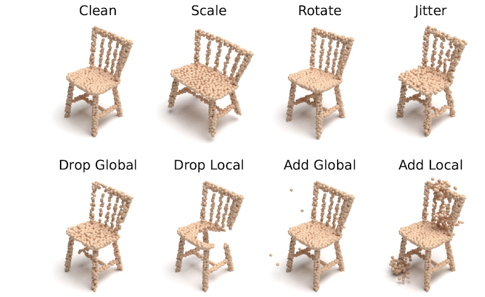

Overview
3D perception, especially point cloud classification and part segmentation, has achieved substantial progress. However, in real-world deployment, point cloud corruptions are inevitable due to the scene complexity, sensor inaccuracy, and processing imprecision. In this work, we contribute ModelNet-C and ShapeNet-C, aiming at rigorously benchmarking and analyzing point cloud robustness under various real-world corruptions.
News
2020.07 - Competition starts! Join now at our CodaLab page.
2020.06 - We release the benchmarking toolkit on GitHub. 🐈
2020.06 - PointCloud-C is now live on Paper-with-Code. Join the benchmark today!
2020.06 - The 1st PointCloud-C challenge will be hosted in conjecture with the ECCV'22 SenseHuman workshop. 🚀
2020.06 - We are organizing the 1st PointCloud-C challenge! Click here to explore the competition details.
2020.05 - ModelNet-C is accepted to ICML 2022. Code is available on GitHub. See here for more details. 🎉
Basic Statistics

Scale & Features
- The very first test-suite for point cloud robustness analysis under corruptions.
- Two sets: ModelNet-C for point cloud classification and ShapeNet-C for part segmentation.
- Real-world corruption sources, ranging from object-, senor-, and processing-levels.
- Seven types of corruptions, each with five severity levels.
Taxonomy
We unify the corruption taxonomy into seven fundamental atomic corruptions: “Add Global”, “Add Local”, “Drop Global”, “Drop Local”, “Rotate”, “Scale” and “Jitter”. Consequently, each real-world corruption is broken down into a combination of the atomic corruptions. In addition, we set five severity levels for each corruption, based on which we randomly sample from the atomic operations to form a composite corruption test set. The detailed description and implementation can be found in our papers.
Benchmark
Based on our test suite, we benchmark more than 20 state-of-the-art methods for point cloud classification and part segmentation, including architecture design, augmentations, and self-supervised pretrains.
Corruption Taxonomy

We break down common corruptions into detailed corruption sources on object-, senor-, and processing-levels, which are further simplified into a combination of seven atomic corruptions for a more controllable empirical analysis. More details are available here.
Corruption Studies
| Method | Jitter | Drop Global | Drop Local | Add Global | Add Local | Scale | Rotate |
| PointNet (Qi et al., 2017) | ✔ | ✔ | ✔ | ||||
| ECC (Simonovsky & Komodakis, 2017) | ✔ | ✔ | |||||
| PointNet++ (Qi et al., 2017) | ✔ | ||||||
| DGCNN (Wang et al., 2019) | ✔ | ||||||
| RSCNN (Liu et al., 2019) | ✔ | ✔ | |||||
| PointASNL (Yan et al., 2020) | ✔ | ✔ | |||||
| Orderly Disorder (Ghahremani et al., 2020) | ✔ | ||||||
| PointAugment (Li et al., 2020) | ✔ | ✔ | ✔ | ✔ | |||
| PointMixup (Chen et al., 2020) | ✔ | ✔ | ✔ | ✔ | |||
| PAConv (Xu et al., 2021) | ✔ | ✔ | ✔ | ||||
| OcCo (Wang et al., 2021) | ✔ | ||||||
| Triangle-Net (Xiao & Wachs, 2021) | ✔ | ✔ | ✔ | ✔ | |||
| CurveNet (Xiang et al., 2021) | ✔ | ✔ | |||||
| RSMix (Lee et al., 2021) | ✔ | ✔ | ✔ | ✔ | |||
| PointWOLF (Kim et al., 2021) | ✔ | ✔ | ✔ | ✔ | |||
| GDANet (Xu et al., 2021) | ✔ | ✔ | |||||
| Our Benchmark | ✔ | ✔ | ✔ | ✔ | ✔ | ✔ | ✔ |
Citation
If you find our work useful for your research, please consider citing the following papers:
@article{ren2022pointcloud-c,
title={Benchmarking and Analyzing Point Cloud Robustness under Corruptions},
author={Jiawei Ren and Lingdong Kong and Liang Pan and Ziwei Liu},
journal={arXiv:220x.xxxxx},
year={2022}
}@article{ren2022modelnet-c,
title={Benchmarking and Analyzing Point Cloud Classification under Corruptions},
author={Jiawei Ren and Liang Pan and Ziwei Liu},
journal={International Conference on Machine Learning (ICML)},
year={2022}
}Contact
Any feedback is very welcome! Please contact us at jiawei011@e.ntu.edu.sg and lingdong001@e.ntu.edu.sg.